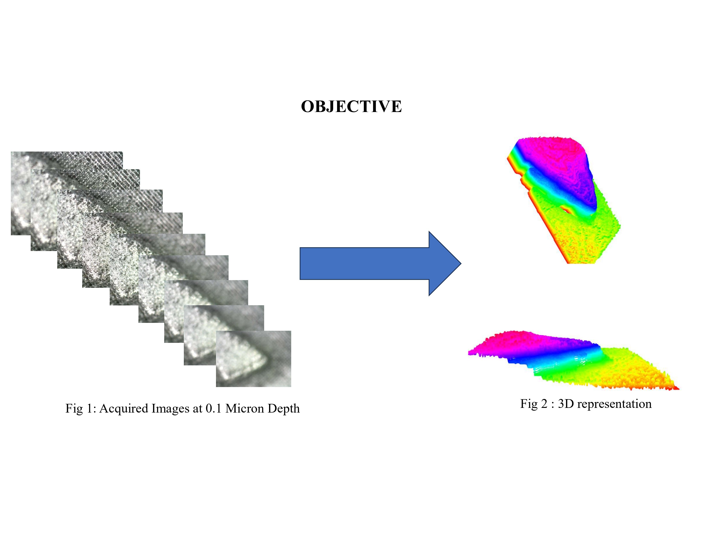
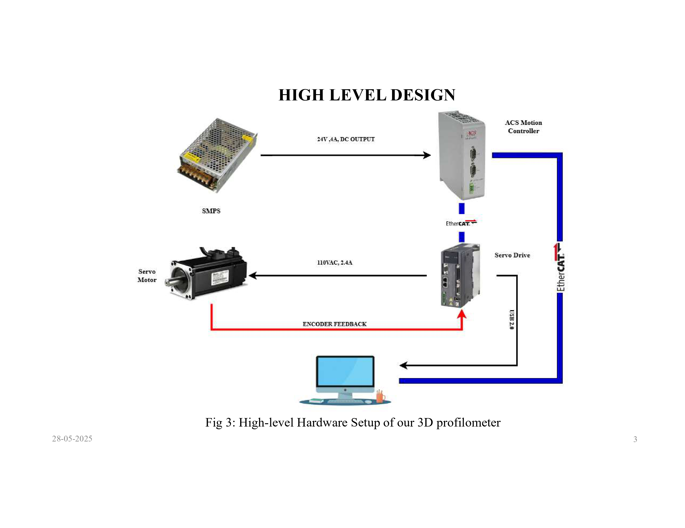
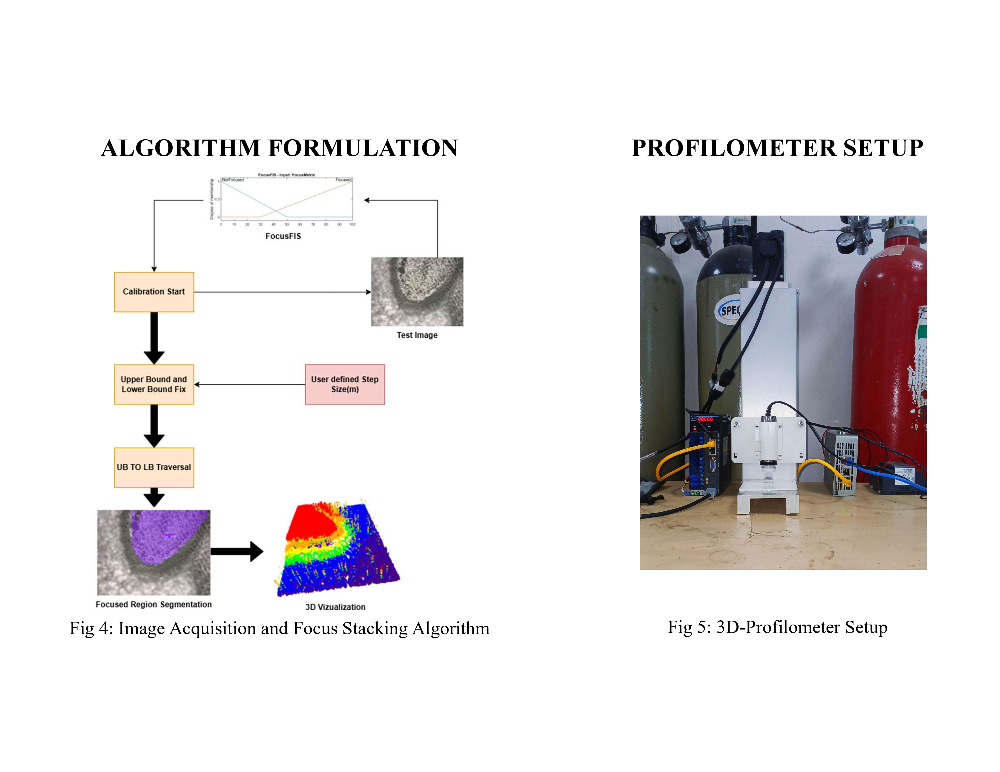
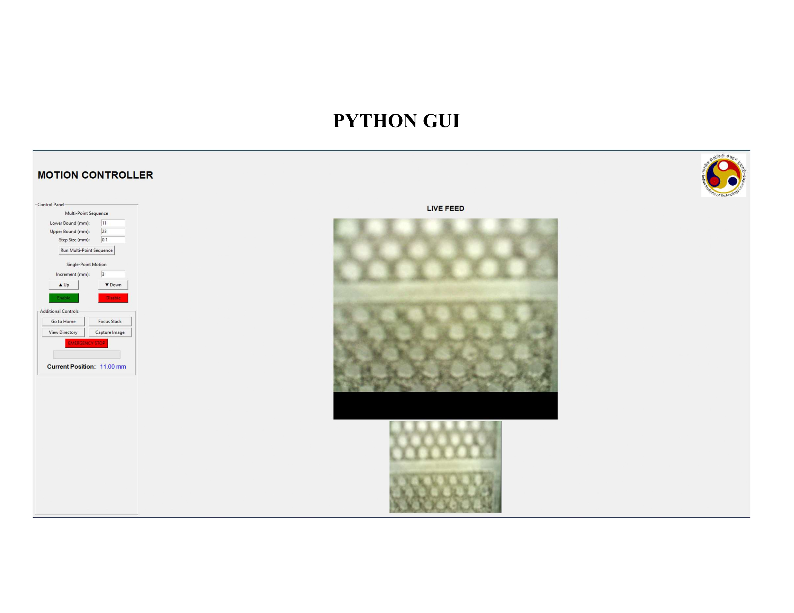
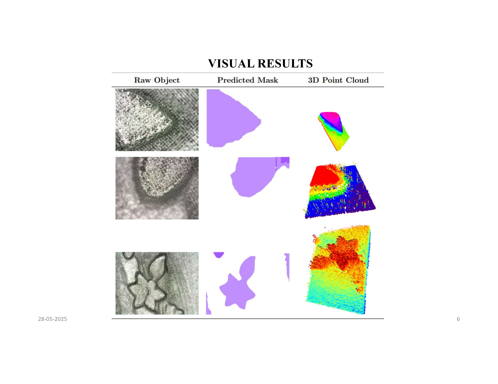
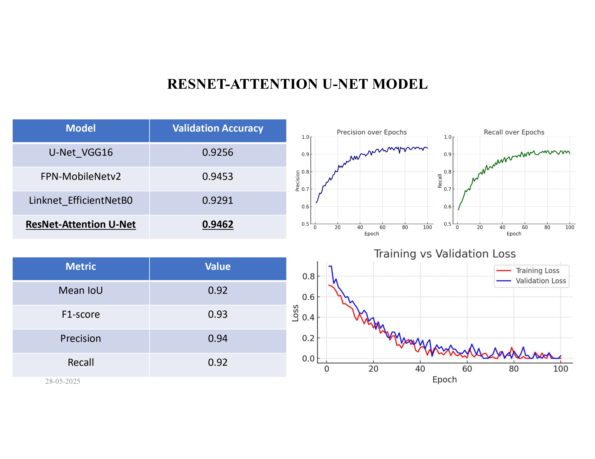
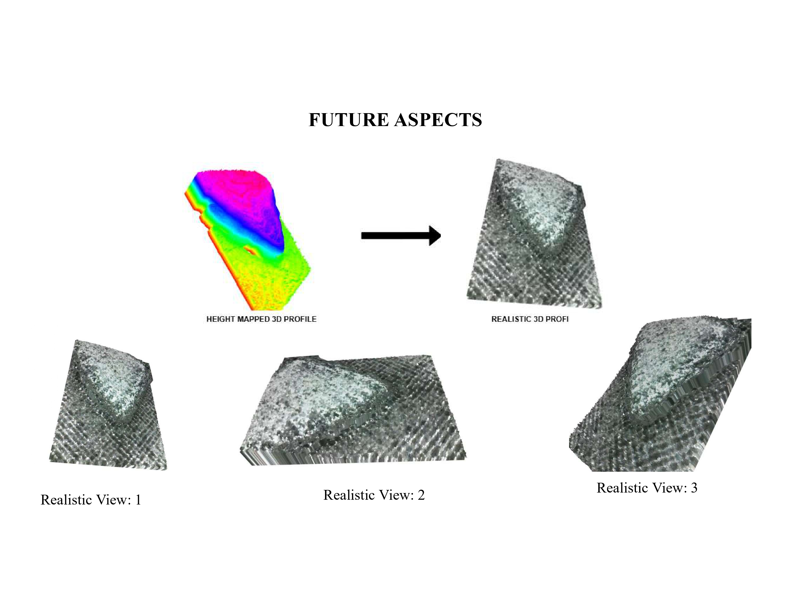

Built to explore.
Engineering projects spanning machine perception, autonomous robotics and feedback control. The descriptions below reflect results reported in the original project material.
← Back to portfolioDeep-Learning Driven
3D Profilometer
An integrated system for surface reconstruction using automated Z-axis traversal, synchronized imaging, attention-based focus segmentation, closed-loop stage control and variance-weighted focus stacking.
Reported project metrics: 0.92 mIoU for focus-region segmentation, 45 ms inference, ±0.1 µm closed-loop positioning accuracy and <0.8 µm reconstruction RMSE. These are project-reported figures, not independently benchmarked results.
PROJECT PRESENTATION / SCROLL HORIZONTALLY TO VIEW ALL EIGHT SLIDES








SLAMDrive UAV
An autonomous aerial robotics project combining real-time visual perception with mapping. The project description reports RetinaNet-based weed detection in potato fields and human surveillance, with respective reported accuracies of 89% and 97%.
View source repository
Holonomic Drive Bot
Coordinated holonomic mobile robots for glyph rendering using camera-based localisation and ArUco markers. The project reports real-time path adjustments and tracking error below 10 cm.
View source repository
Self-Balancing Robot
A self-balancing robotic platform using linear quadratic regulation and inertial measurements. The project description reports operation on slopes up to 15° and approximately 0.5° tilt error.
View source repository
EEG Emotion Detection
An EEG classification pipeline using ICA, bandpass filtering and an LSTM-based recurrent neural network. The original project description reports 85% classification accuracy on multi-subject recordings.
View source repository